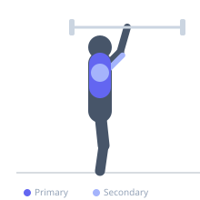
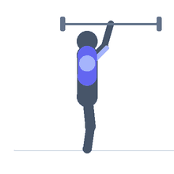

Exercise guide / Guillotine Press
Guillotine Press
The guillotine press is a barbell bench press variation where the bar is lowered to the neck or upper chest rather than the mid-sternum. This higher bar contact point increases pectoralis major stretch and horizontal adduction range, shifting more of the load to the clavicular head and maximizing muscle fiber recruitment across the chest. Due to the extreme shoulder position, it carries higher injury risk and should be reserved for experienced lifters.
Primary muscles
pectoralis major clavicular
pectoralis major sternal
Secondary muscles
deltoid anterior
triceps lateral head
Stabilizers
supraspinatus
infraspinatus
subscapularis
Equipment
Standard Barbell
Flat Bench
Optional
Power Rack (Squat Cage)


Starting position
- Lie on a flat bench under a barbell rack. Grip the bar wide (index fingers on the smooth ring or slightly outside). Position yourself so the bar tracks over the neck/clavicle area, not the mid-chest.
Setup
- Use a spotter at all times. Use lighter weight than a standard bench press — the increased stretch significantly reduces the amount that can be safely lifted. Set safety bars.
Steps
- Step 1: Position on the bench so the bar will descend to the clavicle or upper chest. Grip wide with elbows flared.
- Step 2: Unrack the bar and hold it above the clavicular area.
- Step 3: Inhale and slowly lower the bar toward the neck/upper chest, allowing the elbows to flare to approximately 90 degrees.
- Step 4: Touch the upper chest/clavicle lightly, then exhale and press back to the starting position.
Coaching cues
- Let the elbows flare wide — this is intentional for this variation
- Use lighter load than standard press and focus on the stretch
Breathing
- Inhale on the descent; exhale on the press.
Range of motion
- Touch the upper chest or clavicle — do not bounce. Control the full descent.
Tempo
- 3-0-2-0 (slow controlled descent)
Common mistakes
- Using the same weight as a standard bench press — reduce load significantly
- Lowering too quickly, which can injure the shoulder capsule
Safety
- Always use a spotter and set the safety bars
- Not recommended for those with existing shoulder impingement, labrum issues, or AC joint problems
- This exercise carries higher injury risk than standard bench press — build shoulder health first
Training
- hypertrophy: 8–12 reps
- hypertrophy: 3–4 sets
- Rest: {'hypertrophy': 90}